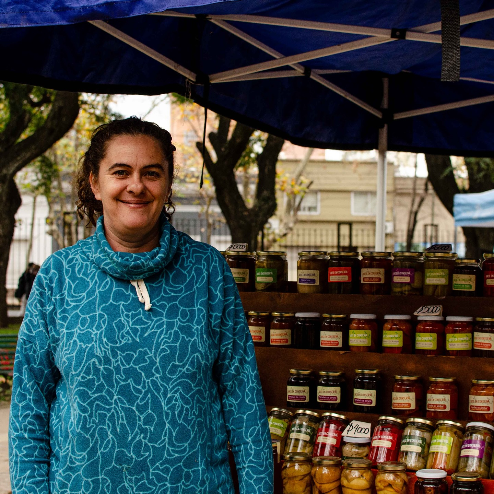
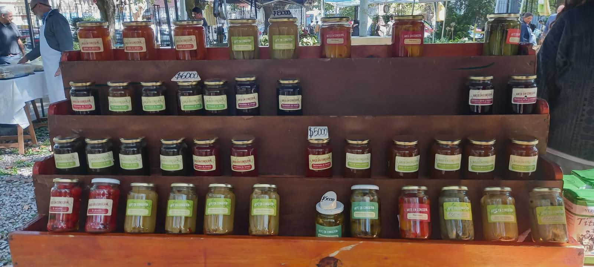
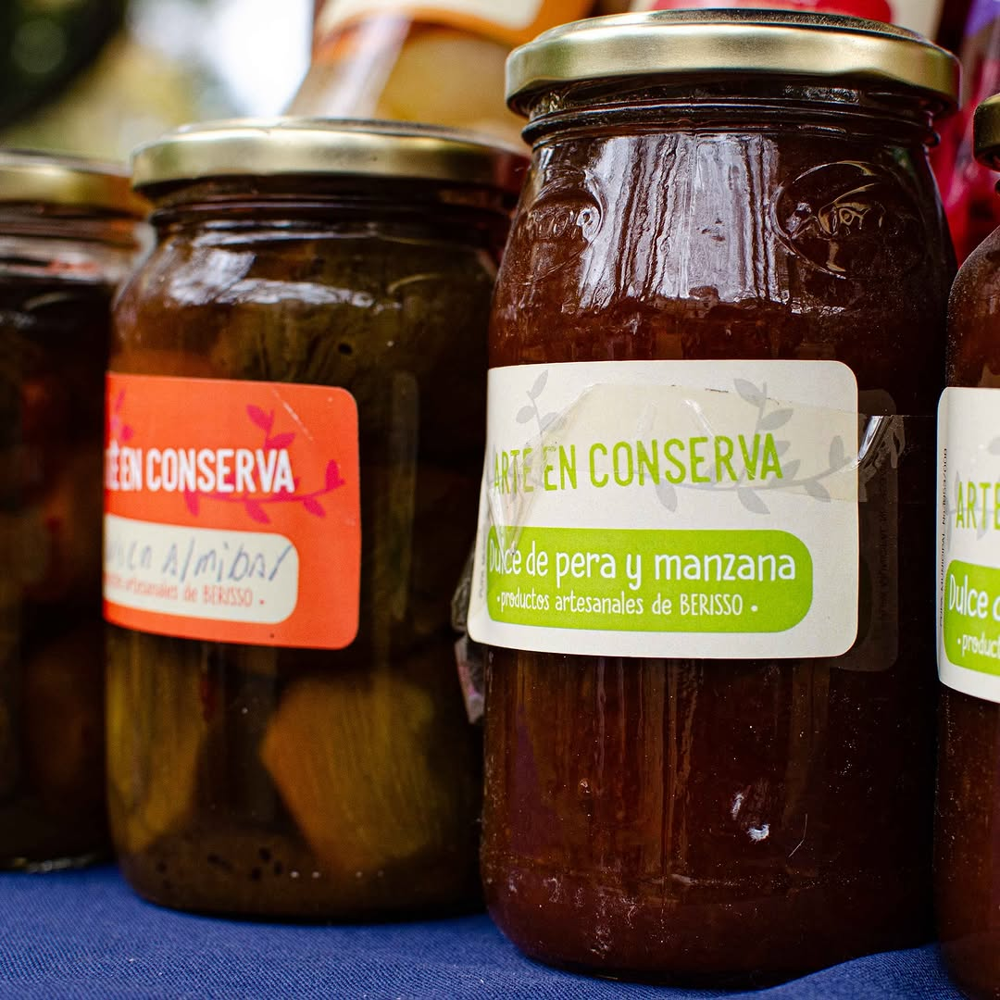
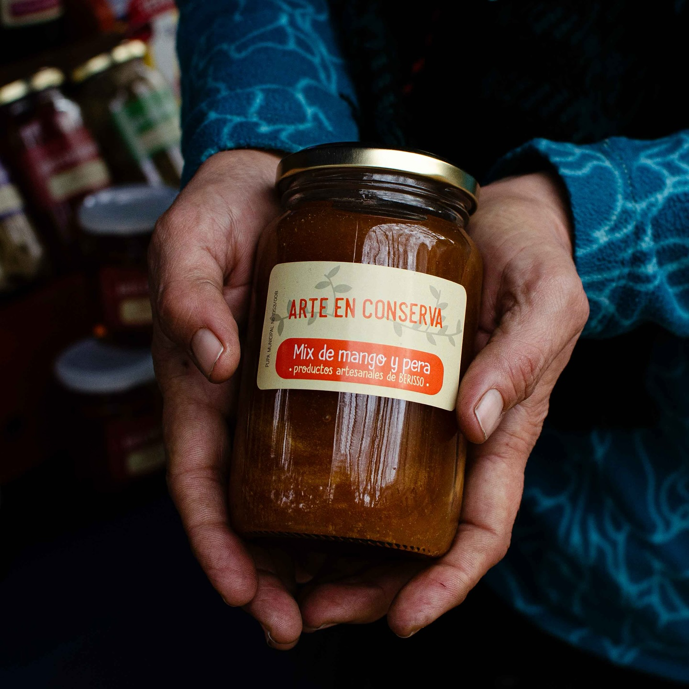
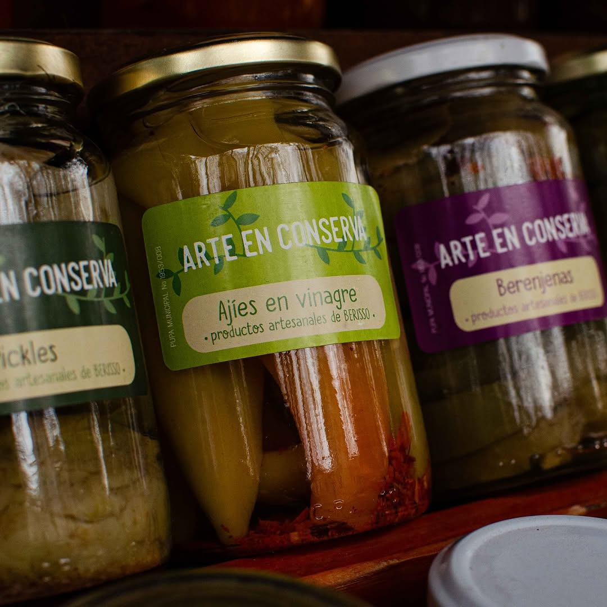
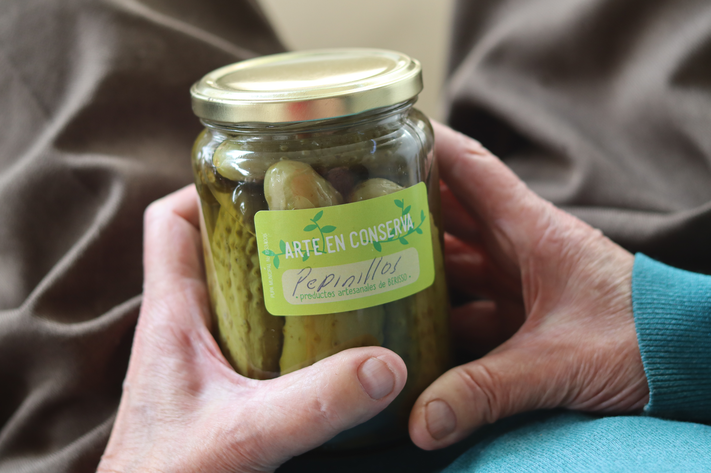

Un emprendimiento nacido en Berisso con el corazón puesto en los sabores de la tierra.
En Arte en Conserva creemos que lo que comemos importa — su origen, su proceso, quién lo hizo y cómo. Por eso producimos de forma artesanal, con ingredientes locales, en pequeños lotes, sin atajos ni aditivos.

"Cada frasco es una historia"
Arte en Conserva · Feria de Berisso
Un vistazo a la feria, los frascos y la pasión detrás de cada producto.
Principios que no negociamos en ningún frasco.
Cada frasco se elabora a mano, en pequeños lotes. Sin líneas de producción, sin prisas.
Fruta, azúcar y limón. Eso es todo. Ningún conservante artificial ni colorante entra en nuestras recetas.
Trabajamos con productores de la zona de Berisso y La Plata para asegurar ingredientes frescos y de origen conocido.
Respetamos el calendario natural. Producimos cuando la fruta está en su mejor momento, no cuando el mercado lo pide.
La feria es nuestro lugar. Vendemos directo al consumidor porque creemos en el vínculo entre quien produce y quien come.
Priorizamos ingredientes producidos de forma sostenible, respetando la tierra y los ciclos naturales.





Explorá todos nuestros productos y armá tu pedido.